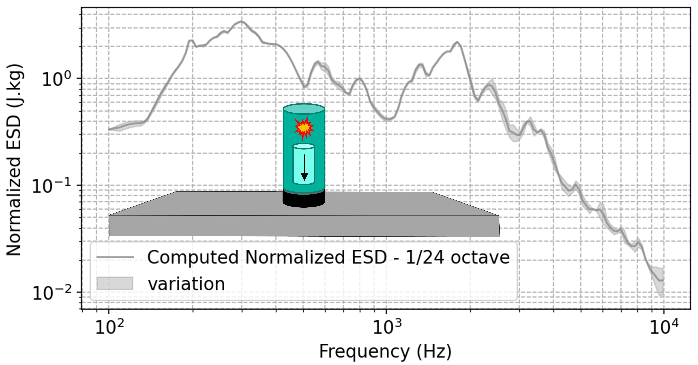

European Conference on Spacecraft Structures, Materials and Environmental Testing
Brunswick, Allemagne, 2026
Abstract
Predicting shock levels for a given shock source at the injection point for system-level tests is considerably challenging. These tests are generally conducted in open-loop conditions with shock sources, which can lead to response variability due to the structure's behaviour under a given shock configuration. Furthermore, to extend the context of the problem, among the various approaches to predict shock levels for a given shock source at the injection, all require modeling of the shock source. Different methodologies exist for this modeling, but in all cases, one of the objectives of shock analysis is to determine Shock Response Spectrum (SRS) levels at points of interest in the structure, particularly at the source. The article and communications listed futher propose a generalizable method for estimating injection shock levels. The approach involves characterizing the shock source on a reference structure and convert computed SRS from measured accelerations to a normalized energy spectral density. This data can be then transferred to a studied specimen, predicting SRS injection shock levels.
- Enhanced precision of injection specifications for shock-sizing rules in preliminary analyses: consider a studied specimen and an actual impact source. By characterizing the source and estimating the shock levels imparted to the structure, a representative test is no longer required; instead, appropriate level specifications can be defined for injection during the early sizing phases.
- Pre-selection of the design for shock sources (e.g., mechanisms, HDRMs, …): consider a studied specimen and several real shock-source variants. Characterizing the sources and estimating the resulting shock levels on the structure enables efficient identification of appropriate shock-source designs without conducting tests on the structure itself.
- Pre-selection of the shock-test configuration: consider a studied specimen and several possible shock-test setups. By characterizing the sources and estimating the shock levels on the structure, the appropriate configuration of shock sources can be identified in advance to reproduce the required test specifications.
- Use of a normalized shock-energy representation for source simulation: the characterization step and its description by a normalized spectral energy density enable the shock source to be represented in a simulation independently of the modeled structure.
In conclusion, this study introduces a novel methodology that reliably represents a shock source through a normalized representation based on the Normalized Energy Spectral Density, computed from a characterization test on a reference specimen. This NESD is then used for shock source levels prediction on a studied specimen subjected to the same shock sources as characterized.
